تُعدّ مدينة طنجة من أعرق المدن التاريخية في المغرب وشمال إفريقيا، ومن المدن التي احتلت مكانة استثنائية في تاريخ حوض البحر الأبيض المتوسط. فقد ساهم موقعها الجغرافي الفريد، عند ملتقى المحيط الأطلسي بالبحر الأبيض المتوسط، وعلى مقربة من شبه الجزيرة الإيبيرية، في جعلها مركزاً للتواصل الحضاري والتبادل التجاري والتنافس السياسي والعسكري عبر آلاف السنين.
ولم تكن طنجة مجرد مدينة ساحلية ذات أهمية تجارية، بل كانت فضاءً تاريخياً تعاقبت عليه حضارات وشعوب وإمبراطوريات متعددة، بدءاً من المجتمعات المحلية الأمازيغية والوجود الفينيقي والقرطاجي، مروراً بالحكم الروماني والوندالي والبيزنطي، ثم الفتح الإسلامي والدول المغربية المتعاقبة، وصولاً إلى الاحتلال البرتغالي والإنجليزي، ومرحلة التدويل، ثم استعادة السيادة المغربية سنة 1956.
إن دراسة تاريخ طنجة تقتضي النظر إليها باعتبارها مدينة ذات تاريخ مركّب، تشكّل عبر التفاعل بين العامل الجغرافي والمجتمعات المحلية والقوى المتوسطية والتحولات السياسية التي عرفها المغرب. وسنعتمد في هذا الموضوع تسلسلاً زمنياً وتحليلاً للأبعاد السياسية والاقتصادية والاجتماعية والثقافية، مع التمييز بين الروايات الأسطورية والمعطيات التاريخية والأثرية.
طنجة في عصور ما قبل التاريخ والجذور القديمة
1. المجال الجغرافي والبدايات الأولى للاستقرار البشري
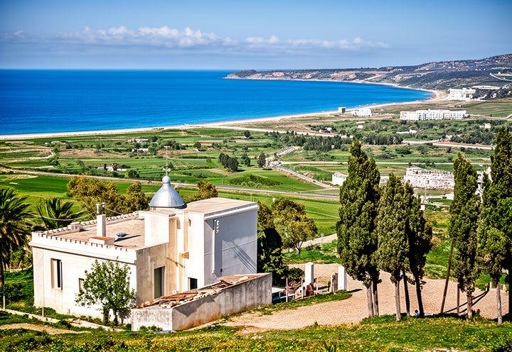
ترتبط بدايات الاستقرار البشري في المجال الطنجاوي بتاريخ قديم جداً، إذ تشير المكتشفات الأثرية في المنطقة إلى وجود الإنسان منذ عصور ما قبل التاريخ. وتُعد مغارات هرقل، الواقعة بمنطقة أشقار غرب طنجة، من أبرز المواقع التي تستحضر هذا العمق التاريخي، إلى جانب مواقع أثرية أخرى في المجال الساحلي المحيط بالمدينة.
ويجب التمييز هنا بين الوجود البشري القديم في المنطقة وبين تأسيس المدينة بوصفها تجمعاً حضرياً منظماً؛ فالأول أقدم بكثير من الثاني. وقد ساعدت مجموعة من العوامل على استقرار الإنسان في هذه المنطقة:
- وفرة الموارد البحرية والبرية.
- اعتدال المناخ نسبياً.
- وجود الموانئ والمرافئ الطبيعية.
- الموقع الذي يربط بين شمال إفريقيا وجنوب أوروبا.
- سهولة التواصل عبر مضيق جبل طارق.
2. السكان الأمازيغ والجذور المحلية
قبل وصول القوى الفينيقية والقرطاجية، كانت المنطقة جزءاً من المجال السكاني والثقافي الأمازيغي لشمال المغرب. وقد شكّلت القبائل الأمازيغية، ولا سيما المجموعات التي ارتبط تاريخها بشمال المغرب، الأساس البشري والثقافي الذي تفاعلت معه الحضارات المتوسطية اللاحقة.
ومن المهم التأكيد أن تاريخ طنجة لا يبدأ مع الفينيقيين أو الرومان، بل إن جذوره المحلية أقدم من تلك الاتصالات الخارجية.
3. الأسطورة اليونانية وتأسيس طنجة
ارتبط اسم طنجة في التراث الإغريقي والروماني بأساطير هرقل وأنتايوس. وتروي إحدى الروايات الأسطورية أن المنطقة ارتبطت بشخصية طنجيس، زوجة البطل الأسطوري أنتايوس، وأن اسم المدينة اشتُق من اسمها. كما ارتبطت المنطقة بإحدى مغامرات هرقل الأسطورية، وهي عبوره إلى أقصى الغرب خلال رحلاته الأسطورية.
غير أن هذه الروايات تنتمي إلى الذاكرة الأسطورية للبحر الأبيض المتوسط، ولا يجوز التعامل معها باعتبارها وقائع تاريخية مثبتة.
4. الوجود الفينيقي والقرطاجي
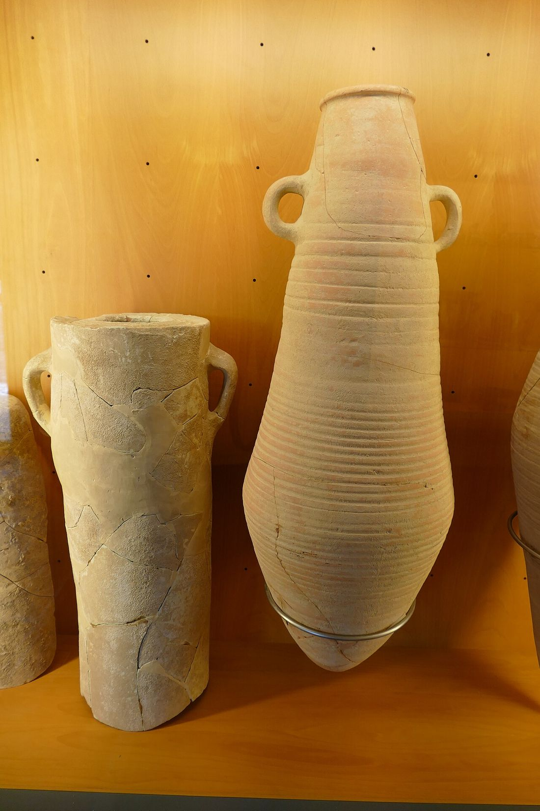
ابتداءً من الألفية الأولى قبل الميلاد، دخلت سواحل شمال المغرب ضمن شبكة الاتصالات التجارية الفينيقية، التي امتدت من شرق البحر الأبيض المتوسط إلى غربه. وقد استفاد الفينيقيون من الموقع الاستراتيجي للمنطقة، فارتبطت طنجة بالمراكز التجارية المتوسطية، ثم تعزز الحضور القرطاجي في المنطقة خلال القرن الخامس قبل الميلاد تقريباً.
- تنشيط المبادلات التجارية البحرية.
- إدخال تقنيات وصناعات جديدة.
- ربط المنطقة بشبكات التجارة القرطاجية.
- تعزيز الاتصال الثقافي بين شمال المغرب وبقية حوض المتوسط.
وبذلك أصبحت المنطقة جزءاً من المجال التجاري والسياسي الذي تشكل حول قرطاج.
طنجة في العصر الموريتاني والروماني
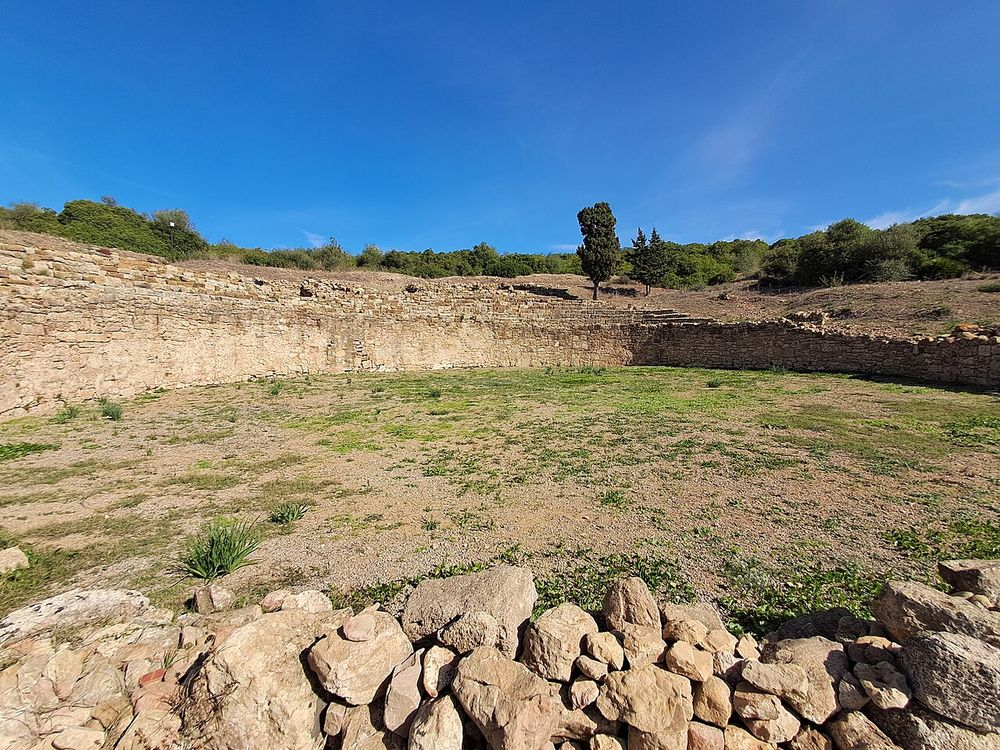
1. مملكة موريطانيا القديمة
قبل السيطرة الرومانية، كانت المنطقة ضمن المجال السياسي لمملكة موريطانيا القديمة، وهي مملكة أمازيغية امتد نفوذها على أجزاء واسعة من شمال المغرب والجزائر الحالية. وقد عرفت هذه المملكة تحولات سياسية مهمة، خصوصاً في عهد الملكين بوخوس الأول ويوبا الثاني، الذي ارتبط عهده بازدهار الحياة الثقافية والعمرانية في المنطقة.
وكانت طنجة جزءاً من المجال الحضري والتجاري للممالك الموريتانية التي حافظت على علاقات مع روما وقرطاج وممالك البحر المتوسط.
2. دخول الحكم الروماني
في سنة 38 قبل الميلاد تقريباً، دخلت طنجة مرحلة جديدة عندما أصبحت مستعمرة رومانية، وعُرفت باسم تينجيس (Tingis). وتذكر الدراسات التاريخية أن المدينة أصبحت لاحقاً من أهم مراكز ولاية موريطانيا الطنجية (Mauretania Tingitana)، التي كانت تشمل أجزاء من شمال المغرب. وقد اكتسبت طنجة أهمية إدارية وعسكرية واقتصادية داخل النظام الروماني.
- تنظيم المجال الحضري.
- تطوير المرافق العامة.
- تشييد المنشآت العسكرية والتجارية.
- انتشار الأنشطة الزراعية والحرفية.
- ارتباط المدينة بالطرق التجارية والإدارية الرومانية.
3. الحياة الاقتصادية والاجتماعية
استفادت تينجيس من موقعها البحري، فأصبحت نقطة اتصال بين موانئ شمال إفريقيا وجنوب أوروبا. كما عرفت المنطقة نشاطاً زراعياً وصناعياً، شمل إنتاج المواد الغذائية وصناعة الفخار والتبادل التجاري. وتشهد المواقع الأثرية في محيط طنجة، ومنها موقع كوطا بأشقار، على أهمية النشاط الاقتصادي الروماني في المنطقة.
4. تراجع السلطة الرومانية والتحولات اللاحقة
ابتداءً من القرن الخامس الميلادي، دخلت المنطقة مرحلة اضطراب سياسي نتيجة تراجع الإمبراطورية الرومانية الغربية. وفي سنة 429م تقريباً، عبر الوندال إلى شمال إفريقيا، وأصبحت المنطقة خاضعة لتحولات عسكرية وسياسية متتابعة. ثم استعاد البيزنطيون السيطرة على أجزاء من شمال إفريقيا خلال القرن السادس الميلادي، غير أن نفوذهم في المنطقة لم يكن مستقراً بصورة دائمة. وهكذا انتقلت طنجة من المجال الروماني إلى مرحلة جديدة من التحولات السياسية التي مهدت لاندماجها في العالم الإسلامي.
طنجة والفتح الإسلامي وبداية المرحلة الإسلامية
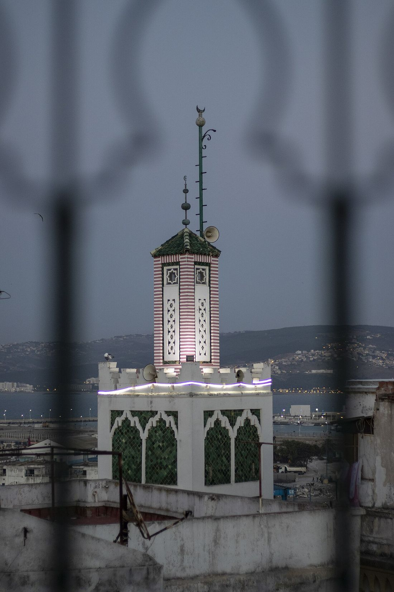
1. الفتح الإسلامي لشمال المغرب
شهد القرن السابع الميلادي توسع الدولة الإسلامية نحو شمال إفريقيا، بعد انطلاق الفتوحات من المشرق العربي باتجاه مصر ثم بلاد المغرب. وقد وصل النفوذ الإسلامي إلى طنجة في سياق الحملات التي قادها القادة المسلمون في شمال إفريقيا، خصوصاً خلال النصف الثاني من القرن السابع وبداية القرن الثامن الميلادي.
- انتشار الإسلام.
- انتشار اللغة العربية إلى جانب الأمازيغية.
- تطور المؤسسات الدينية والقضائية.
- اندماج المنطقة في المجال السياسي والاقتصادي للعالم الإسلامي.
2. طنجة وطارق بن زياد وفتح الأندلس
تحتل طنجة مكانة بارزة في تاريخ الفتح الإسلامي للأندلس. ففي سنة 711م، انطلقت الحملة الإسلامية بقيادة طارق بن زياد نحو شبه الجزيرة الإيبيرية، انطلاقاً من المجال المقابل للأندلس، بعد عبور مضيق جبل طارق. ويرتبط اسم المضيق باسم طارق بن زياد، الذي أصبح رمزاً لهذه المرحلة التاريخية.
ومن الضروري تاريخياً الإشارة إلى أن عملية العبور لم تكن حدثاً منعزلاً، بل جاءت نتيجة تحضيرات عسكرية وسياسية سابقة، وارتبطت بدور موسى بن نصير والسلطة الأموية في إفريقية.
3. طنجة في عصر الولاة والدولة الأموية
بعد الفتح الإسلامي، دخلت طنجة ضمن المجال الإداري للدولة الأموية، وأصبحت جزءاً من شبكة المدن والمراكز العسكرية التي ساهمت في تنظيم المغرب الإسلامي. وقد عرفت المنطقة خلال هذه المرحلة صراعات سياسية واجتماعية مرتبطة بطبيعة الحكم الأموي وبالتحولات التي عرفتها القبائل الأمازيغية.
ومن الأحداث المهمة التي أثرت في شمال المغرب ثورة ميسرة المطغري سنة 739م، التي ارتبطت بالحركة الخوارجية وبالاحتجاجات ضد بعض الممارسات السياسية والمالية للولاة الأمويين. وقد ساهمت هذه الثورة في إضعاف السيطرة المركزية للدولة الأموية على أجزاء واسعة من المغرب.
4. طنجة في المرحلة الإدريسية
مع قيام الدولة الإدريسية في المغرب سنة 788م تقريباً، دخلت طنجة ضمن المجال السياسي للدولة المغربية الناشئة. وكانت الدولة الإدريسية محطة مهمة في تاريخ المنطقة، لأنها ساهمت في بناء كيان سياسي مستقل نسبياً عن الخلافة الشرقية، وعززت مكانة المغرب ضمن العالم الإسلامي. وقد عرفت طنجة خلال هذه المرحلة وما تلاها تحولات سياسية مرتبطة بالتنافس بين القوى المحلية والإقليمية، ولا سيما الأمويين في الأندلس والفاطميين في إفريقية.
طنجة في عهد المرابطين والموحدين والمرينيين
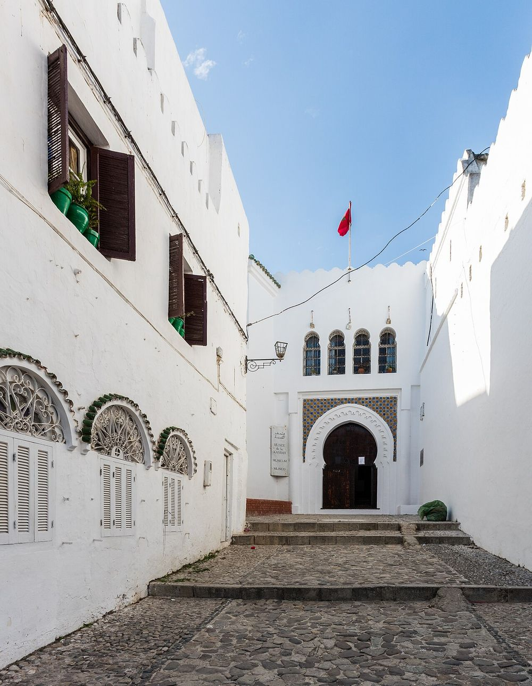
1. المرحلة المرابطية
خلال القرن الحادي عشر الميلادي، دخلت طنجة ضمن المجال السياسي للدولة المرابطية، التي انطلقت من الصحراء المغربية وامتد نفوذها إلى المغرب والأندلس. وقد اهتم المرابطون بتوحيد المجال المغربي وتعزيز الطرق التجارية والعسكرية التي تربط شمال البلاد بجنوبها. واكتسبت طنجة أهمية خاصة باعتبارها مدينة حدودية وميناءً استراتيجياً قريباً من الأندلس.
2. المرحلة الموحدية
في القرن الثاني عشر الميلادي، أصبحت طنجة ضمن الدولة الموحدية، التي أسسها محمد بن تومرت ووسّع نفوذها عبد المؤمن بن علي. وشهد المغرب خلال هذه المرحلة تطوراً عمرانياً وإدارياً وعسكرياً مهماً. وكانت طنجة جزءاً من منظومة المدن الساحلية التي ارتبطت بالسياسة العسكرية الموحدية في مواجهة القوى المسيحية في شبه الجزيرة الإيبيرية. كما ساهمت العلاقات المتبادلة بين المغرب والأندلس في تعزيز الحركة التجارية والثقافية عبر مضيق جبل طارق.
3. المرحلة المرينية
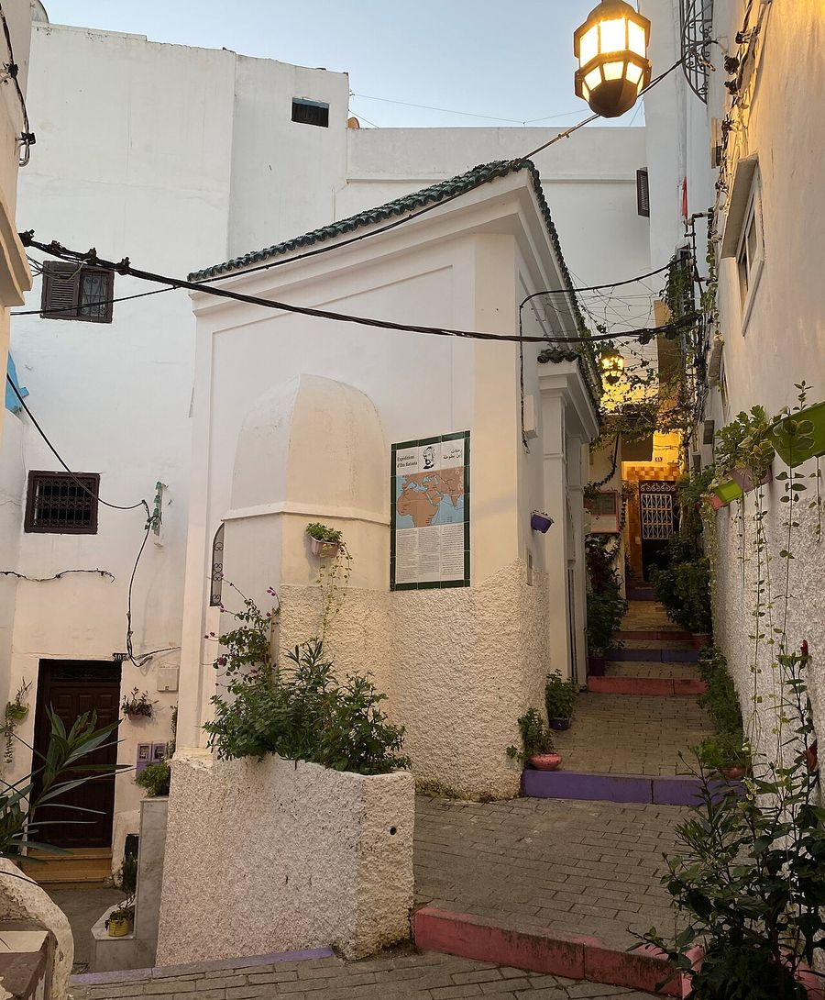
ابتداءً من القرن الثالث عشر الميلادي، دخلت طنجة مرحلة الحكم المريني. وقد تميز العصر المريني بالاهتمام بالمدن المغربية وبناء المدارس والمنشآت الدينية والعمرانية، إضافة إلى تطوير العلاقات مع الأندلس. وشكلت طنجة إحدى الحلقات المهمة في التواصل بين ضفتي المضيق.
غير أن تراجع الدولة المرينية خلال القرنين الرابع عشر والخامس عشر، وتزايد التدخلات الأوروبية في شمال المغرب، مهّدا لمرحلة جديدة من التنافس العسكري على المدينة.
4. الأهمية الاستراتيجية للموقع
- الموقع العسكري: التحكم في المجال القريب من مضيق جبل طارق.
- الموقع التجاري: مراقبة المبادلات البحرية بين المحيط الأطلسي والبحر الأبيض المتوسط.
- الموقع السياسي: كونها بوابة شمالية للمغرب ومركزاً للاتصال مع الأندلس وأوروبا.
وقد جعلت هذه العوامل من طنجة مدينة ذات أهمية تتجاوز حدودها الجغرافية.
الاحتلال البرتغالي والإسباني (1471–1661)
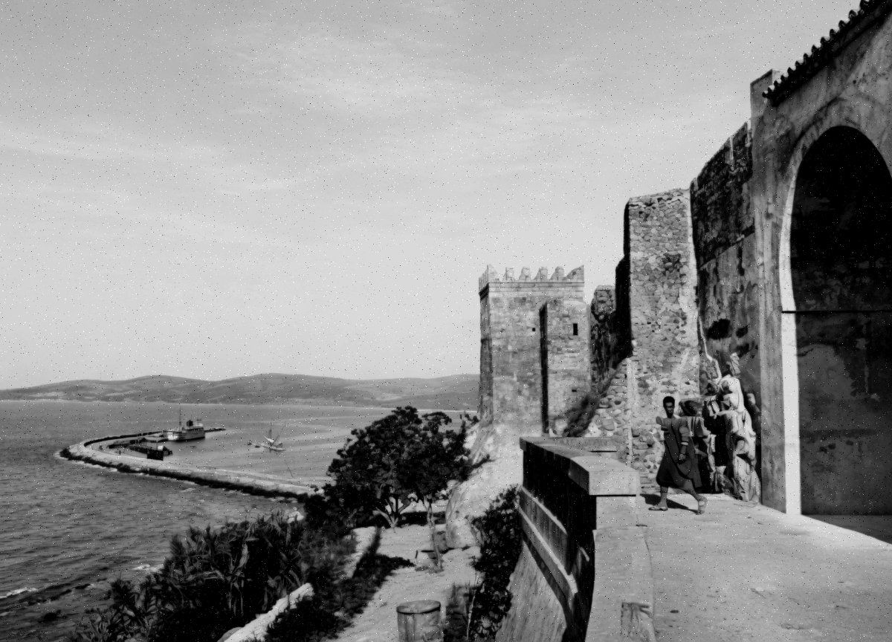
1. الاحتلال البرتغالي سنة 1471
في سنة 1471م، تمكنت القوات البرتغالية من احتلال طنجة بعد محاولات عسكرية سابقة. وكان ذلك جزءاً من التوسع البرتغالي في السواحل المغربية خلال القرن الخامس عشر، في إطار مشروع السيطرة على الطرق التجارية والبحرية، وتعزيز النفوذ البرتغالي في غرب البحر الأبيض المتوسط والمحيط الأطلسي.
- التنظيم الدفاعي للمدينة.
- طبيعة العلاقات التجارية.
- التركيبة السكانية.
- حركة السكان بين المدينة ومحيطها.
- العلاقة بين السلطة المغربية والمراكز الساحلية المحتلة.
2. طنجة في ظل الاتحاد الإيبيري
خلال الفترة الممتدة من 1580 إلى 1640، خضعت البرتغال وإسبانيا لحكم ملكي واحد في إطار الاتحاد الإيبيري. وبذلك أصبحت طنجة، التي كانت تحت السيطرة البرتغالية، خاضعة للتاج الإسباني في هذه المرحلة، قبل أن تعود إلى الإدارة البرتغالية بعد استعادة البرتغال استقلالها سنة 1640.
3. المقاومة المغربية
لم يكن الوجود البرتغالي في طنجة مستقراً دون مقاومة. فقد شهدت المنطقة مواجهات عسكرية متكررة بين القوى المغربية والقوات البرتغالية، في سياق أوسع من الصراع حول الثغور الساحلية. وكانت طنجة جزءاً من استراتيجية مغربية هدفت إلى استعادة المدن الساحلية التي وقعت تحت السيطرة الإيبيرية.
الاحتلال الإنجليزي واستعادة السيادة المغربية (1661–1684)
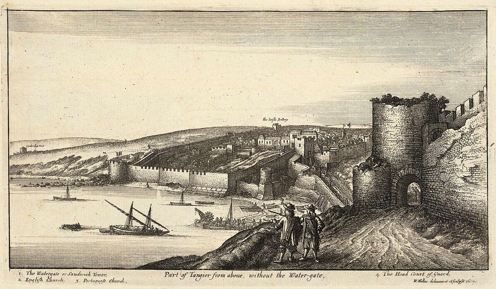
1. انتقال طنجة إلى الإنجليز سنة 1661
في سنة 1661، انتقلت طنجة من البرتغال إلى إنجلترا ضمن الترتيبات المرتبطة بزواج الملك تشارلز الثاني من الأميرة البرتغالية كاثرين دي براغانزا. وكانت المدينة جزءاً من المهر السياسي الذي قدمته البرتغال للتاج الإنجليزي. وقد مثّل انتقال طنجة إلى إنجلترا بداية تجربة استعمارية جديدة، سعت من خلالها بريطانيا إلى تعزيز نفوذها التجاري والعسكري في البحر الأبيض المتوسط.
2. المشروع الإنجليزي في طنجة
اهتم الإنجليز بتحويل طنجة إلى قاعدة بحرية وتجارية استراتيجية. وسعوا إلى تطوير الميناء والتحصينات العسكرية، كما أنفقوا موارد كبيرة على تعزيز موقع المدينة. لكن المشروع واجه صعوبات عديدة، منها:
- ارتفاع تكاليف الدفاع والصيانة.
- المقاومة المغربية المستمرة.
- صعوبة تأمين المجال المحيط بالمدينة.
- الخلافات السياسية والاقتصادية المرتبطة بإدارة المستعمرة.
3. تحرير طنجة سنة 1684
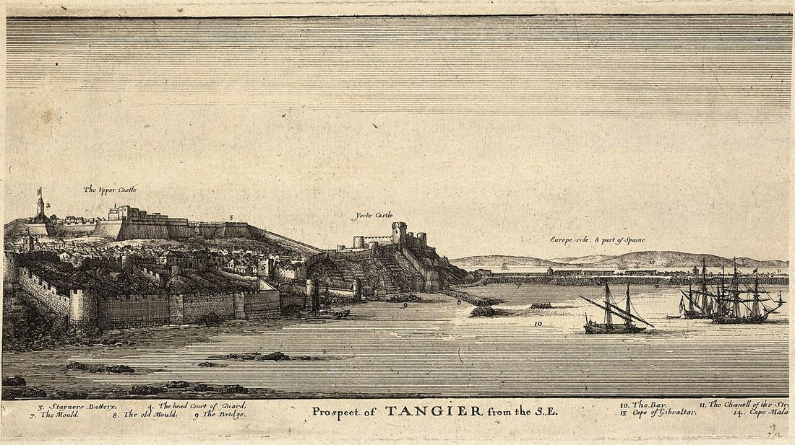
في سنة 1684م، انسحبت القوات الإنجليزية من طنجة بعد أن قامت بتدمير جزء كبير من منشآتها الدفاعية والمينائية قبل مغادرتها. وقد جاء هذا الانسحاب في سياق الضغط العسكري المغربي خلال عهد السلطان العلوي مولاي إسماعيل.
وبذلك استعادت الدولة المغربية السيطرة على طنجة، بعد أكثر من قرنين من الوجود الإيبيري والإنجليزي المتواصل. ويُعدّ هذا الحدث من أهم المحطات في تاريخ المدينة، لأنه أعادها إلى السيادة المغربية وأعاد توجيهها ضمن المشروع السياسي للدولة العلوية.
طنجة في عهد الدولة العلوية (القرنان 18–19)
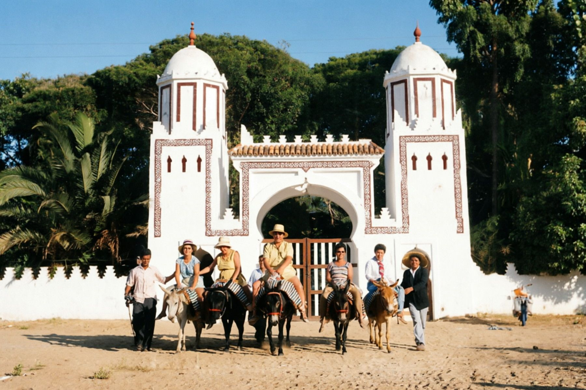
1. إعادة بناء المدينة وترسيخ السلطة المغربية
بعد استعادة طنجة، عملت الدولة العلوية على إعادة تنظيم المجال الحضري والعسكري للمدينة. وقد ساهم السلطان مولاي إسماعيل في إعادة تثبيت السلطة المغربية بها، بينما عرفت المدينة في عهد السلطان محمد بن عبد الله اهتماماً متزايداً بالموانئ والتجارة والعلاقات الدبلوماسية.
2. طنجة في عهد السلطان محمد الثالث
شهد عهد السلطان محمد بن عبد الله (1757–1790) توجهاً نحو تعزيز العلاقات التجارية والدبلوماسية مع القوى الأوروبية. وقد احتلت طنجة مكانة مهمة في هذه السياسة، بحكم قربها من أوروبا وملاءمة موقعها لاستقبال الممثلين الدبلوماسيين والتجار الأجانب. كما تعرضت المدينة لتأثير زلزال لشبونة سنة 1755 وما رافقه من هزات ارتدادية وأضرار في مناطق من المغرب، وهو ما أثر في البنية العمرانية والساحلية.
3. طنجة عاصمة دبلوماسية للمغرب
خلال القرن التاسع عشر، تحولت طنجة تدريجياً إلى المركز الدبلوماسي الأبرز للمغرب. وفي سنة 1856، تعزز هذا الدور بعد توقيع الاتفاقية التجارية المغربية البريطانية، التي وسّعت العلاقات التجارية وكرّست حضوراً أجنبياً متزايداً في المدينة. وأصبحت طنجة مقراً لعدد كبير من القنصليات والبعثات الدبلوماسية، ومن بينها المفوضية الأمريكية التاريخية التي ارتبط تأسيسها بعلاقات المغرب والولايات المتحدة منذ أواخر القرن الثامن عشر.
وقد ترتب على هذا التحول ظهور مجتمع متعدد الجنسيات والثقافات، ضم المغاربة والأوروبيين واليهود والمسلمين والأجانب القادمين من بلدان مختلفة.
4. طنجة والتنافس الاستعماري الأوروبي
في أواخر القرن التاسع عشر وبداية القرن العشرين، أصبحت طنجة إحدى النقاط الأساسية في التنافس الاستعماري حول المغرب. وكانت فرنسا وإسبانيا وبريطانيا وألمانيا من أبرز القوى التي اهتمت بالمدينة. وقد برزت أهميتها خلال الأزمة المغربية الأولى سنة 1905، عندما زار الإمبراطور الألماني فيلهلم الثاني طنجة، في 31 مارس 1905، وأعلن موقفاً داعماً لاستقلال المغرب وسيادة السلطان، في سياق مواجهة التوسع الفرنسي. كما ارتبطت طنجة بالأزمة المغربية الثانية سنة 1911، التي انتهت بتسويات دولية ساهمت في تمهيد الطريق لفرض الحماية الفرنسية والإسبانية على المغرب سنة 1912.
طنجة في مرحلة التدويل (1923–1956)
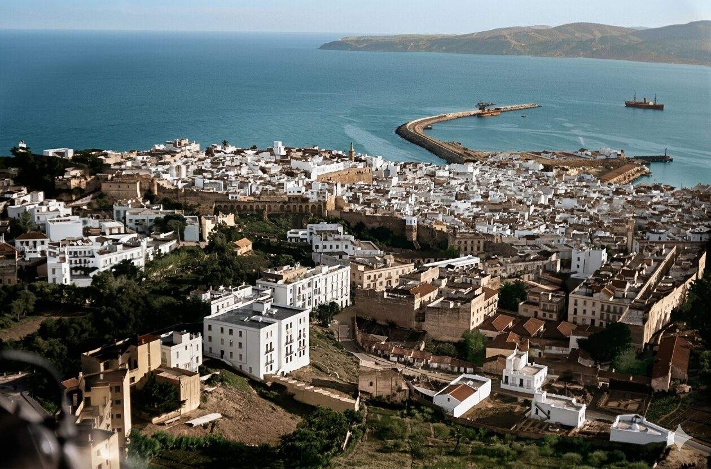
1. الظروف السياسية التي أدت إلى تدويل طنجة
بعد فرض الحماية الفرنسية على المغرب سنة 1912، وتحديد منطقة النفوذ الإسباني في شمال البلاد، ظهرت مشكلة خاصة تتعلق بمستقبل طنجة. فقد كانت المدينة ذات أهمية استراتيجية كبيرة، ولم تكن القوى الأوروبية مستعدة للسماح لدولة واحدة بالسيطرة المنفردة عليها.
وبعد مفاوضات دولية طويلة، تم التوصل إلى اتفاقية 18 ديسمبر 1923 المتعلقة بتنظيم الوضع الدولي لطنجة. وقد دخل النظام حيز التنفيذ سنة 1925، بعد استكمال الترتيبات والمصادقات اللازمة.
2. طبيعة النظام الدولي
لم تصبح طنجة دولة مستقلة، ولم تفقد من الناحية القانونية ارتباطها بالمغرب. بل خضعت لنظام إدارة دولية مشتركة، شاركت فيه مجموعة من الدول، مع احتفاظ السلطان المغربي بالسيادة القانونية عليها. وكان للنظام مؤسسات خاصة، من بينها:
- هيئة تشريعية وإدارية دولية.
- أجهزة شرطة متعددة الجنسيات.
- محاكم ذات تنظيم خاص.
- نظام جمركي ومالي متميز.
- تمثيل للدول المشاركة في إدارة المنطقة.
وقد كان هذا الوضع استثنائياً في تاريخ المدن المتوسطية خلال القرن العشرين.
3. طنجة مركزاً دولياً للتجارة والمال
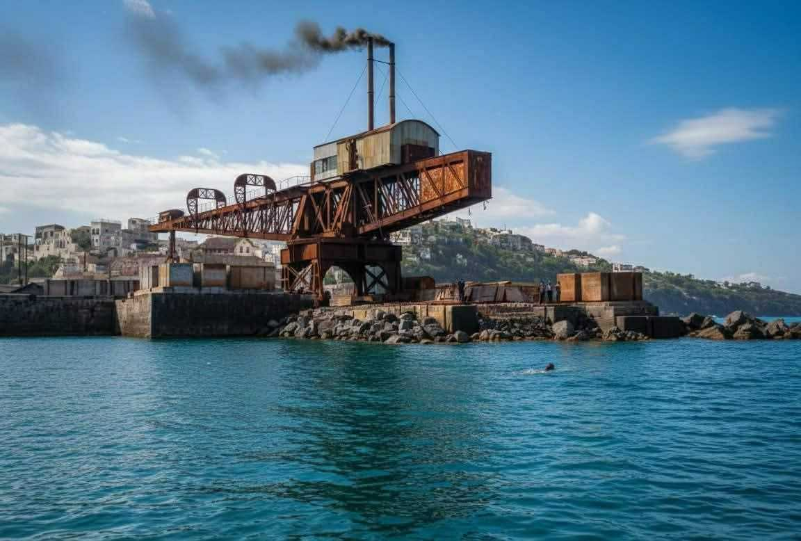
ساهم النظام الدولي في جذب رؤوس الأموال والتجار والمصرفيين والشركات الأجنبية إلى المدينة. وأصبحت طنجة خلال العقود اللاحقة مركزاً مالياً وتجارياً مهماً، مستفيدة من نظامها الجمركي والضريبي المميز ومن وجود عدة عملات وشبكات تجارية دولية. كما ازدهرت فيها الفنادق والمقاهي والمؤسسات التجارية والثقافية.
لكن هذه الدينامية الاقتصادية لم تكن خالية من التناقضات؛ فقد صاحبتها مظاهر المضاربة المالية والتهريب والاختلالات الاجتماعية.
4. طنجة خلال الحرب العالمية الثانية
في يونيو 1940، دخلت القوات الإسبانية طنجة، وأعلنت اتخاذ إجراءات مرتبطة بضمان حياد المدينة في سياق الحرب العالمية الثانية. غير أن هذه الخطوة أدت عملياً إلى تعليق النظام الدولي وإلحاق المدينة بمنطقة النفوذ الإسباني. واستمر هذا الوضع حتى سنة 1945، عندما أعيد النظام الدولي بعد انتهاء الحرب، في إطار الترتيبات التي أعقبت انتصار الحلفاء.
5. الحياة الثقافية والاجتماعية في طنجة الدولية
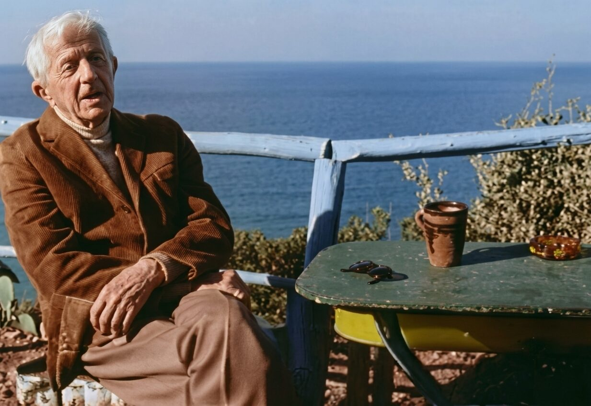
لم تكن طنجة خلال هذه المرحلة مجرد مركز مالي أو دبلوماسي، بل تحولت إلى فضاء ثقافي دولي. فقد جذبت المدينة عدداً من الأدباء والفنانين والرحالة والصحفيين الأجانب، الذين وجدوا فيها بيئة ثقافية متعددة اللغات والمرجعيات. ومن الأسماء الأدبية والفنية المرتبطة بتاريخ طنجة الحديث:
- بول بولز: ارتبط بالمدينة وأقام فيها سنوات طويلة، وأسهم في التعريف بثقافتها.
- ويليام بوروز: ارتبط اسمه بالمشهد الأدبي الطنجاوي في خمسينيات القرن العشرين.
- محمد شكري: نقل جوانب من الحياة الاجتماعية والإنسانية في طنجة في أعماله الأدبية.
- جان جينيه: ارتبط بالمغرب وبالفضاء الثقافي الذي مثّلته طنجة.
كما عرفت المدينة تنوعاً دينياً وثقافياً، إذ تعايشت فيها جماعات مسلمة ويهودية ومسيحية، وتداخلت فيها اللغات العربية والأمازيغية والإسبانية والفرنسية والإنجليزية وغيرها.
6. نهاية النظام الدولي سنة 1956
بعد استقلال المغرب عن فرنسا في 2 مارس 1956، وعن إسبانيا في 7 أبريل 1956، أصبحت مسألة استعادة السيادة المغربية الكاملة على طنجة ضرورة سياسية وتاريخية. وفي 29 أكتوبر 1956، انعقدت في طنجة المرحلة النهائية من التسوية الدولية، وصدر الإعلان الذي اعترف بإلغاء النظام الدولي للمدينة واستعادة السلطان المغربي كامل سلطاته عليها. وبذلك انتهت مرحلة التدويل التي استمرت من 1923 إلى 1956، وعادت طنجة إلى إطار السيادة الوطنية المغربية الكاملة.
طنجة بعد الاستقلال (1956–1990)
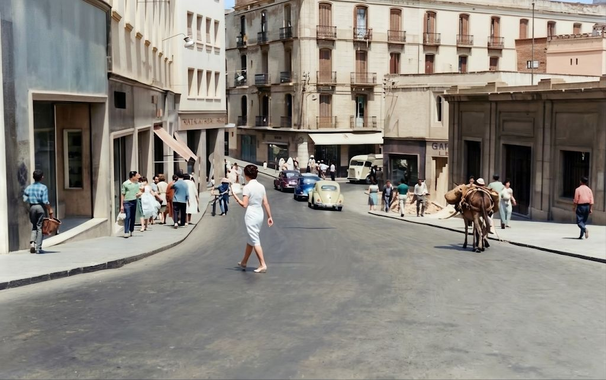
1. مرحلة الاندماج في الدولة المغربية
بعد سنة 1956، واجهت طنجة مرحلة جديدة تمثلت في إعادة إدماج مؤسساتها الإدارية والاقتصادية والقضائية ضمن مؤسسات الدولة المغربية. وكان هذا التحول ضرورياً لتوحيد الإدارة الوطنية وإنهاء آثار النظام الدولي السابق. كما تطلب الأمر إعادة تنظيم العلاقة بين المدينة ومحيطها الوطني، خصوصاً في مجالات التجارة والجمارك والمالية والقضاء.
2. التحولات الاقتصادية
شهدت طنجة خلال العقود التالية تغيرات في بنيتها الاقتصادية. فقد تراجعت بعض الامتيازات التي ارتبطت بالنظام الدولي، في حين بدأت المدينة تتجه تدريجياً نحو تنويع أنشطتها. وشملت هذه الأنشطة:
- التجارة والخدمات.
- الصيد البحري.
- الصناعات الغذائية.
- الصناعات النسيجية.
- الأنشطة السياحية.
- الخدمات المرتبطة بالميناء.
3. التحول العمراني والسكاني
عرفت طنجة توسعاً عمرانياً متزايداً نتيجة النمو السكاني والهجرة الداخلية. وقد اتسعت المدينة خارج أسوار المدينة القديمة، وظهرت أحياء سكنية وتجارية جديدة، وتغيرت طبيعة المجال الحضري تدريجياً. وأصبحت المدينة تجمع بين:
- المدينة العتيقة.
- القصبة التاريخية.
- الأحياء الأوروبية القديمة.
- الأحياء السكنية الحديثة.
- المناطق الصناعية والتجارية.
4. طنجة والهوية الثقافية
رغم التحولات الاقتصادية والعمرانية، احتفظت طنجة بهويتها الثقافية المتعددة. فقد ظلت المدينة فضاءً للتفاعل بين الثقافة المغربية المحلية والتأثيرات الأندلسية والمتوسطية والأوروبية والإفريقية. وتجلت هذه الخصوصية في العمارة والموسيقى والمطبخ واللهجات والعادات الاجتماعية.
طنجة في العصر الحديث والمعاصر (1990–2026)
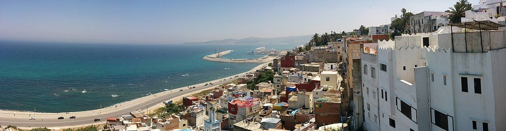
1. التحول الاستراتيجي للمدينة
منذ تسعينيات القرن العشرين، بدأت طنجة تدخل مرحلة جديدة من التحول الاقتصادي والعمراني. وقد تعزز هذا التوجه مع المشاريع الوطنية الكبرى التي استهدفت تحويل شمال المغرب إلى قطب اقتصادي وصناعي ولوجستي. وأصبحت طنجة واحدة من أبرز المدن التي استفادت من سياسة الانفتاح الاقتصادي والاستثمار في البنية التحتية.
2. ميناء طنجة المتوسط
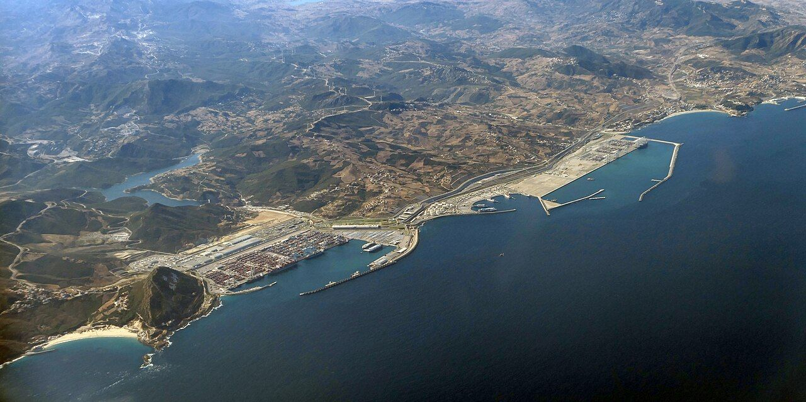
يمثل ميناء طنجة المتوسط أحد أهم التحولات في تاريخ المدينة والمنطقة الشمالية للمغرب. وقد أُطلق المشروع في إطار استراتيجية تهدف إلى تعزيز موقع المغرب في التجارة البحرية الدولية، وربط البلاد بشبكات النقل والتوزيع العالمية. وقد ساهم الميناء في:
- تطوير قطاع النقل البحري.
- جذب الاستثمارات الأجنبية.
- تعزيز الصناعات المرتبطة بالتصدير.
- خلق فرص الشغل.
- تطوير المناطق الصناعية واللوجستية.
- تعزيز ارتباط الاقتصاد المغربي بالأسواق العالمية.
ومن المهم التمييز بين مدينة طنجة التاريخية ومركب طنجة المتوسط، الذي يقع شرق المدينة في المجال الساحلي لمنطقة الفحص أنجرة.
3. المنطقة الصناعية وتطور صناعة السيارات
أصبحت طنجة ومحيطها من أهم الأقطاب الصناعية في المغرب، خصوصاً في قطاع صناعة السيارات ومكوناتها. وقد ساهم إنشاء المصانع الكبرى والمناطق الصناعية واللوجستية في تغيير البنية الاقتصادية والاجتماعية للمنطقة. ومن أبرز التحولات:
- ظهور تجمعات صناعية متخصصة.
- تطور الصناعات الموجهة للتصدير.
- ارتفاع الطلب على اليد العاملة المؤهلة.
- توسع التكوين المهني والتقني.
- نمو الخدمات اللوجستية والتجارية.
4. تطور البنية التحتية والنقل
شهدت طنجة تطوراً مهماً في البنية التحتية، شمل الطرق السيارة والطرق الوطنية والربط السككي والنقل الحضري. كما ساهم مشروع القطار فائق السرعة البراق، الذي دخل الخدمة سنة 2018، في تقليص زمن السفر بين طنجة وعدد من المدن المغربية، وربط المدينة بصورة أكثر فعالية بالشبكة الوطنية.
5. طنجة والسياحة الثقافية
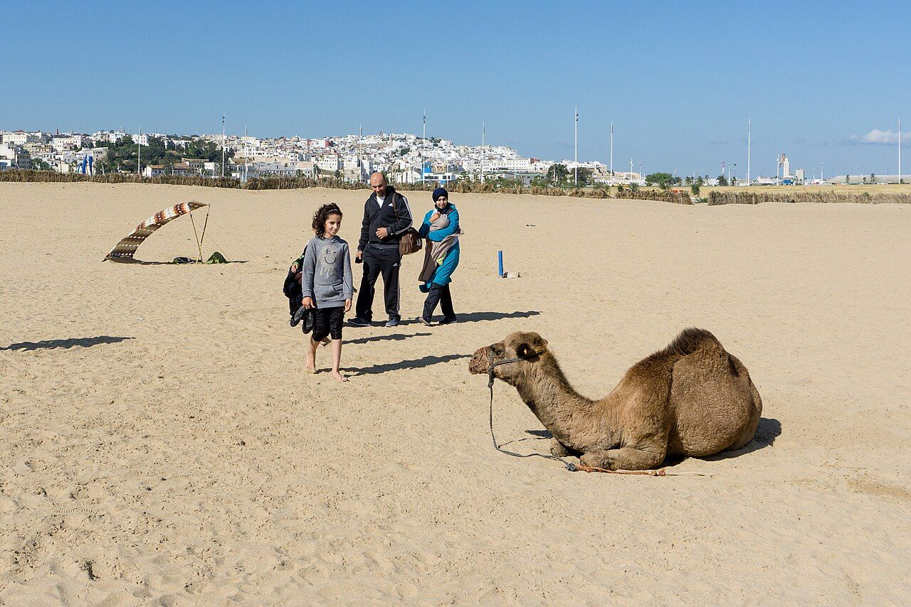
تمتلك طنجة مقومات سياحية وثقافية مهمة، تستند إلى تاريخها الطويل وتنوع تراثها العمراني والطبيعي. ومن أبرز معالمها:
- القصبة ومتحف القصبة.
- المدينة العتيقة.
- ساحة السوق الكبير.
- ساحة السوق الصغير.
- مغارات هرقل.
- رأس سبارطيل.
- مقهى الحافة.
- المفوضية الأمريكية.
- المقابر التاريخية بمنطقة مرشان.
- الواجهة البحرية ومارينا طنجة.
6. طنجة في سنة 2026
في الوقت الراهن، تمثل طنجة أحد أهم الأقطاب الحضرية والاقتصادية في المغرب. فهي تجمع بين الوظيفة الصناعية واللوجستية والتجارية والسياحية والثقافية، وتستفيد من موقعها الجغرافي الذي يجعلها نقطة اتصال بين إفريقيا وأوروبا.
ومع ذلك، فإن التطور المتسارع يطرح تحديات تتعلق بالمحافظة على التراث التاريخي، والتوازن العمراني، وحماية البيئة الساحلية، وتحقيق التنمية الاجتماعية المتوازنة. وبذلك تواجه طنجة معادلة أساسية: كيف يمكنها أن تصبح مدينة عالمية حديثة دون أن تفقد ذاكرتها التاريخية وهويتها المغربية؟
التراث المعماري والحضاري لطنجة
1. المدينة العتيقة
تمثل المدينة العتيقة النواة التاريخية لطنجة، وقد احتفظت بجزء مهم من بنيتها التقليدية، بما فيها الأزقة والأسواق والمساكن والمساجد والزوايا. وتكشف عمارتها عن تفاعل بين العناصر المغربية والأندلسية والمتوسطية.
2. القصبة
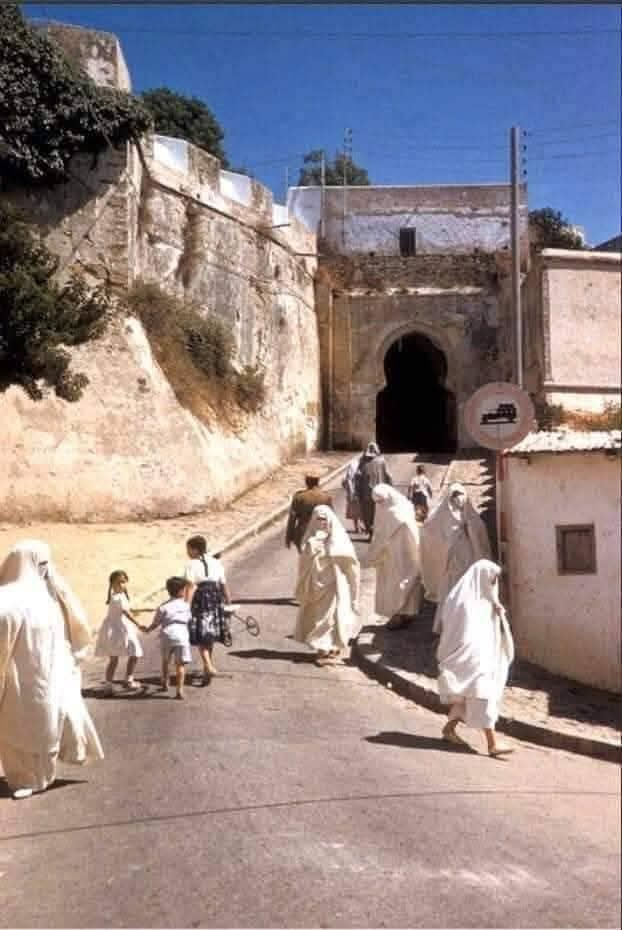
تحتل القصبة موقعاً مرتفعاً يشرف على المدينة والميناء ومضيق جبل طارق. وقد ارتبطت وظيفتها تاريخياً بالدفاع والإدارة والحكم، وتضم منشآت تعود إلى مراحل مختلفة من تاريخ طنجة.
3. التراث الأثري
تضم طنجة ومحيطها مجموعة من المواقع الأثرية المهمة، منها:
- مغارات أشقار.
- موقع كوطا الأثري.
- مقابر مرشان.
- المقابر القديمة بشارع ابن العبار.
- بقايا المنشآت الرومانية.
- مواقع أثرية في محيط رأس سبارطيل.
وتؤكد هذه المواقع أن تاريخ طنجة لا يقتصر على تاريخ المدينة العتيقة، بل يمتد إلى مجال جغرافي أوسع يضم مناطق ساحلية وداخلية متعددة.
4. التراث المعماري الأوروبي
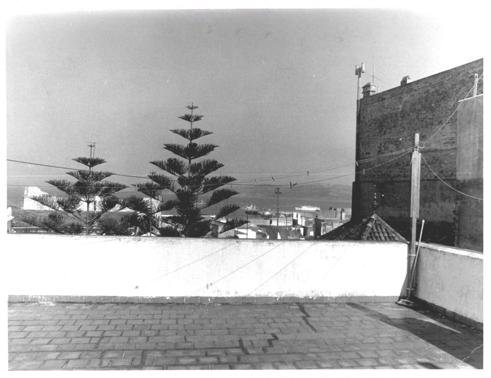
تحتفظ طنجة أيضاً بمبانٍ تعكس مراحل الحضور الدبلوماسي والتجاري الأوروبي، خصوصاً خلال القرنين التاسع عشر والعشرين. ومن أبرزها المفوضية الأمريكية، وبعض الفنادق والمباني ذات الطراز المعماري الأوروبي، ومنشآت مرحلة المنطقة الدولية. وهكذا تقدم طنجة نموذجاً لمدينة تشكلت عمارتها عبر تفاعل الحضارات وليس من خلال نمط معماري واحد.
قراءة تحليلية في الأهمية التاريخية لطنجة
أولاً: البعد الجغرافي والاستراتيجي
كان الموقع الجغرافي العامل الأكثر استمرارية في تاريخ المدينة. فقد جعلها مضيق جبل طارق نقطة اتصال بين قارتين، ومعبراً مهماً للتجارة والجيوش والهجرات.
ثانياً: البعد السياسي
عرفت طنجة تعاقب سلطات متعددة، لكن هذا التعاقب لم يُلغِ ارتباطها التاريخي بالمجال المغربي. وقد تميزت خصوصاً بمرحلة التنافس الاستعماري ثم التدويل.
ثالثاً: البعد الاقتصادي
انتقلت المدينة من المراكز التجارية القديمة إلى الموانئ المتوسطية، ثم إلى مركز دبلوماسي ومالي دولي، وصولاً إلى القطب الصناعي واللوجستي الحديث.
رابعاً: البعد الاجتماعي والثقافي
ساهم التفاعل بين السكان المحليين والجماعات الوافدة في تشكيل مجتمع طنجاوي يتميز بالتنوع اللغوي والديني والثقافي.
خامساً: البعد الحضاري
تمثل طنجة نموذجاً لاستمرار الحضارة المحلية مع استقبال التأثيرات الخارجية وإعادة توظيفها ضمن خصوصية مغربية.
خاتمة عامة
إن تاريخ مدينة طنجة هو تاريخ مدينة استثنائية، صنعت جغرافيتها جزءاً كبيراً من مصيرها، وجعلها موقعها الاستراتيجي محط اهتمام الحضارات والإمبراطوريات والقوى الدولية على امتداد قرون طويلة.
فمن الجذور الأمازيغية القديمة، مروراً بالتأثيرات الفينيقية والقرطاجية والرومانية، ثم الفتح الإسلامي والدول المغربية المتعاقبة، وصولاً إلى الاحتلالات الأوروبية والنظام الدولي، ظلت طنجة حاضرة في الأحداث الكبرى التي عرفها غرب البحر الأبيض المتوسط.
ولعل أهم ما يميز تاريخها هو قدرتها على استيعاب التأثيرات الحضارية المتعددة مع الاحتفاظ بانتمائها المغربي.
إن استعادة طنجة لسيادتها الوطنية سنة 1956 لم تكن مجرد نهاية لنظام دولي استثنائي، بل كانت بداية مرحلة جديدة من تاريخها، انتقلت فيها من مدينة ذات وضع سياسي خاص إلى قطب اقتصادي وحضري ووطني ودولي.
واليوم، تقف طنجة أمام مسؤولية تاريخية تتمثل في التوفيق بين متطلبات التحديث الاقتصادي والعمراني وبين المحافظة على ذاكرتها الحضارية وتراثها المعماري والإنساني.
وعليه، فإن طنجة ليست مجرد مدينة تقع عند ملتقى بحرين وقارتين، بل هي مدينة تقع عند ملتقى التاريخ والجغرافيا والحضارات، وتشكل إحدى أهم صفحات التاريخ المغربي والمتوسطي.
الخط الزمني لأهم المحطات التاريخية
المراجع والمصادر التاريخية والأكاديمية
لضمان الطابع الأكاديمي للموضوع، ينبغي الاستناد إلى الدراسات المتخصصة والمصادر الأثرية والوثائق التاريخية.
أولاً: مصادر تاريخية وأثرية مؤسساتية
- وكالة التهيئة الحضرية لطنجة — التراث والمواقع الأثرية
- جماعة طنجة — تاريخ المدينة
- دراسة السياق التاريخي والمعماري لطنجة — ArchNet
ثانياً: دراسات أكاديمية متخصصة
- Corisande Fenwick — Tingis, Encyclopedia of Ancient History
- Tristan Stein — Tangier in the Restoration Empire
- Jean-Pierre Debats — Tanger, son statut, sa zone (1923–1956)
ثالثاً: الوثائق القانونية والتاريخية
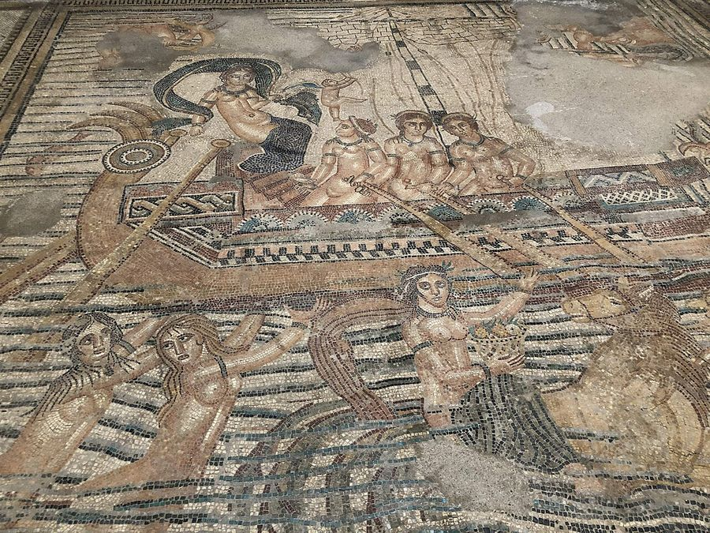
طنجة عبر التاريخ
من الجذور الأمازيغية القديمة إلى المدينة العالمية المعاصرة
- فصولاً تاريخية مفصلة حسب العصور.
- خرائط تاريخية للمجال الطنجاوي.
- صوراً ووثائق أرشيفية قديمة.
- تاريخ القبائل والسكان والعائلات الطنجاوية.
- تاريخ الميناء والتجارة والحياة اليومية.
- تاريخ الأحياء والمعالم والشخصيات الطنجاوية.
- مراجع علمية وهوامش وتوثيق ببليوغرافي.